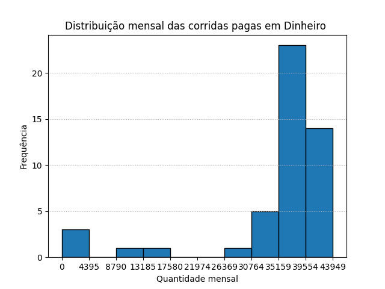
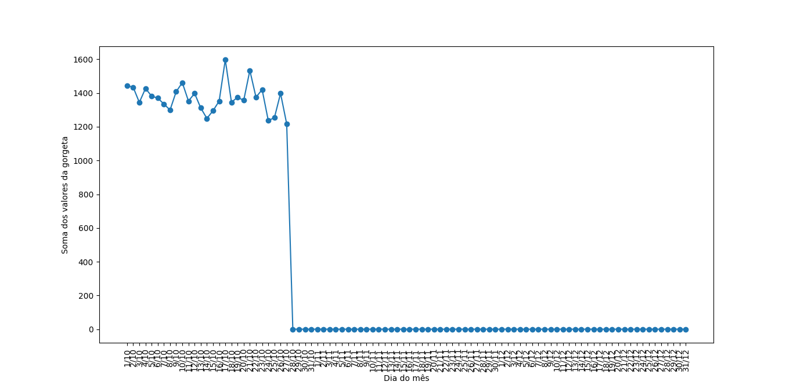

Quesitos mínimos
Após consulta ao Banco de dados sabemos que a distância total percorrida nos 4 anos, para viagens com até dois passageiros foi:
8838663.16 Milhas !
Essa distância foi Percorrida em um total de:
3319652 viagens !
Deste modo com aproximação de três casas decimais a distância média para viagens com até dois passageiros foi:
2.663 Milhas !!
Após somar os valores das vendas de cada empresa e montar uma lista com os montantes
Selecionamos o maior valor dessa lista e concluímos que:
Creative Mobile Technologies foi o vendor que mais arrecadou com arrecadação de 19549084.28 Dólares
Consultamos o banco de dados e somamos para cada mês o valor das corridas pagas em dinheiro
Com ajuda da biblioteca matplotlib do python mapeamos as frequências e intervalos e plotamos o seguinte histograma:

Após consultar a soma das gorgetas agrupadas por dia no banco de dados montamos uma lista com os valores:
Esta lista nos permite plotar o seguinte gráfico de série temporal:
